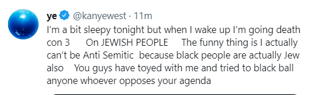

Alex Tedesco's Page
The debates of concussions have been brought back up by the media recently and it sparked debate regarding when it is being too cautious to pull a player from a game to the point where it drastically impacts the outcome of a game. Player safety should be a priority in sports but when players are removed after showing minimal symptoms, is that being too cautious.

Ross Pochiro's Page
Kanye has recently been under fire for a flurry of statements he has made over the past month. He has appeared in several interviews in order to try to clear the air and explain what made him say what he said. However, in every interview, he was upset that it was never considered what made him say what he did.
Leah Dibbles' Page
Countries across the world have laws that govern the way that not only their government functions but also laws that protect the people. The question that needs answering is “What is the right way to deal with those who break these laws while still allowing them to maintain their humanity?